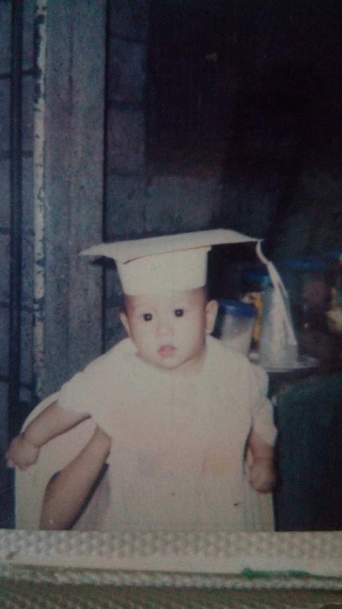

I were born on October 18th, 2002 at the Jose Reyes Medical Center, in the midst of a rainy and late night. My father named me Ren Jastine, after his own name, Renie, which he also incorporated into my older brothers' names.
It's common for parents to choose a name with a special meaning or significance, and it appears that my father wanted to maintain a family tradition by giving all similar names. It's interesting to think about the origins and meanings behind our names, as they can reveal insights into our cultural and familial backgrounds.
As I continue through life, my name will become an important part of my identity. Whether I choose to embrace its meaning or create my own personal associations, my name is a unique symbol of who I am and where I come from.
Back to the main page